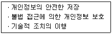
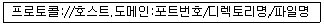
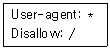
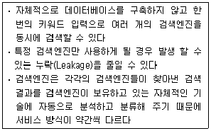
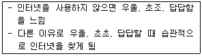

인터넷정보관리사-2급 (2014-12-06 기출문제)
1과목: 인터넷의 이해
1. 다음 중 국외 인터넷 역사를 시대 순으로 가장 바르게 나열한 것은?
- ARPANET → NSFNET → DNS → WWW
- ARPANET → DNS → NSFNET → WWW
- ARPANET → WWW → DNS → NSFNET
- ARPANET → DNS → WWW → NSFNET
(정답률: 61%)

2. 다음 중 인터넷의 특징에 대한 설명으로 가장 알맞은 것은?
- 경로명, 파일명에서 대ㆍ소문자를 구별한다.
- HTTP 프로토콜에 연결되어 있는 네트워크이다.
- 중앙에 통제 기구가 없지만 폐쇄형 구조를 지닌다.
- 사용할 수 있는 운영체제는 윈도우즈와 리눅스 계열로 제한되어 있다.
(정답률: 51%)
3. 다음 중 멀티캐스트용으로 사용되는 IPv4 주소의 등급은?
- B Class
- C Class
- D Class
- E Class
(정답률: 79%)
4. 다음 중 IPv6 주소에 대한 설명으로 가장 거리가 먼 것은?
- 16진수로 표기된다.
- 128비트 주소 체계이다.
- 각 필드는 마침표(.)로 구분된다.
- 16비트씩 8개의 필드로 구성된다.
(정답률: 80%)
5. 다음 중 여러 개의 도메인 이름을 하나의 주소에 대응시켜 멀티 도메인을 사용할 수 있게 하는 서비스는?
- 버추얼 웹 서비스
- 버추얼 메일 서비스
- 버추얼 호스트 서비스
- 버추얼 도메인 네임 서비스
(정답률: 64%)
6. 다음 중 국내 교육기관을 나타내는 2단계 도메인의 연결과 거리가 먼 것은?
- ac : 대학교
- hs : 고등학교
- es : 초등학교
- kg : 기타 학교
(정답률: 83%)
7. 다음 중 프로토콜의 기본요소로 전송을 위한 조작이나 오류 복원의 제어정보에 대한 규정을 나타내는 것은?
- 구문
- 순서
- 의미
- 정보
(정답률: 44%)
8. 다음 중 물리적 주소를 IP 주소로 변환시키는 프로토콜은?
- ARP
- TCP
- ICMP
- RARP
(정답률: 60%)
9. 다음 중 프로토콜별 포트번호로 가장 거리가 먼 것은?
- FTP : 21
- SMTP : 25
- DNS : 110
- NNTP : 119
(정답률: 61%)
10. 다음 중 웹 2.0기술에 기반을 둔 사람과 사람의 관계를 지향하는 서비스는?
- 소셜 저널
- 소셜 미디어
- 인터넷 저널
- 매스 미디어
(정답률: 82%)
11. 다음 중 소셜 네트워크 서비스에 대한 설명으로 가장 거리가 먼 것은?
- 온라인상에서 인맥 관리 및 정보 공유를 통해 사회적 관계를 구축ㆍ강화시켜주는 서비스이다.
- 모바일 기기의 보급 확산으로 이용이 급증하고 있다.
- 누리 소통망 또는 사회 관계망 서비스라고 한다.
- 수익 창출은 이루어지지 않는다.
(정답률: 82%)
12. 다음 중 폐쇄형 소셜 네트워크 서비스가 아닌 것은?
- Daybe
- Band
- Path
(정답률: 67%)
13. 다음 중 클라우드 컴퓨팅에 대한 설명으로 가장 거리가 먼 것은?
- 서버, 스토리지, 소프트웨어 등 IT 자원을 필요 시 인터넷을 통해 서비스 형태로 이용하는 방식이다.
- 2006년 구글의 직원이 크리스토프 비시글리어가 유휴 컴퓨팅 자원에 대한 활용을 제안하면서 처음 사용되었다.
- 기술은 유틸리티 컴퓨팅을 적용하고 과금 형태는 그리드 컴퓨팅을 적용한다.
- 서비스 운용 형태에 따라 퍼블릭 클라우드, 프라이빗 클라우드, 하이브리드 클라우드로 구분된다.
(정답률: 56%)
14. 다음 중 클라우드 컴퓨팅의 윤리적 쟁점으로 가장 거리가 먼 것은?
- 서버 데이터의 신뢰성 검증 문제
- 서버 데이터의 기밀성 유지 문제
- 소프트웨어 설치 및 관리, 업데이트 사항
- 서버 해킹으로 인한 개인정보의 유출 가능성
(정답률: 61%)
15. 다음 중 빅 데이터의 특징인 3V에 해당되지 않는 것은?
- 가치
- 데이터 양
- 다양성
- 생성 속도
(정답률: 55%)
16. 다음 중 클라우드 컴퓨팅 환경에서 제공되는 서비스로 가장 거리가 먼 것은?
- IT 융합 서비스
- 스토리지 제공 서비스
- 소프트웨어 임대 서비스
- 가상 서버 및 데스크탑 서비스
(정답률: 54%)
17. 다음 중 서로 다른 콘텐츠나 서비스를 융합하여 새로운 형태의 서비스나 소프트웨어를 만들어 제공하는 것은?
- 태깅
- 매시업
- 시맨틱 웹
- 시냅틱 웹
(정답률: 57%)
18. 다음 중 개인정보 보호의 필요성에 대한 설명으로 가장 거리가 먼 것은?
- 개인정보는 단순한 정보로 기업의 자산과는 무관하다.
- 개인정보 문제는 공공 행정의 신뢰성 및 국가 브랜드에 영향을 미친다.
- 개인정보의 보호가 국가 및 사회 안전, 기업 발전의 필수 요소가 되었다.
- 개인정보가 유출될 경우 불법 매매와 명의 도용으로 범죄와 사기에 악용될 수 있다.
(정답률: 78%)
19. 다음에서 설명하는 개인정보의 처리 과정으로 옳은 것은?

- 수집
- 관리
- 이용
- 파기
(정답률: 76%)
20. 다음 중 저작인격권에 해당되지 않는 것은?
- 공표권
- 복제권
- 성명표시권
- 동일성유지권
(정답률: 58%)
21. 다음 중 저작권의 특징으로 가장 거리가 먼 것은?
- 배타적 지배권
- 시간적 유한성
- 무체 재산권
- 단일 권리
(정답률: 50%)
22. 다음 중 전자서명법에 의하여 지정된 공인 인증기관에 해당되지 않는 것은?
- 금융결제원
- 한국정보인증(주)
- 한국무역정보통신
- 한국인터넷진흥원
(정답률: 62%)
23. 다음 중 전자서명의 활용 분야가 다른 하나는?
- 전자민원서비스
- 전자조달
- 전자계약
- 입찰
(정답률: 39%)
24. 다음은 컴퓨터 시스템의 주변장치 이다. 이 중 성격이 다른 하나는?
- 스캐너
- 플로터
- 디지타이저
- 바코드 판독기
(정답률: 67%)
25. 다음 중 운영체제의 성능 평가 기준으로 가장 거리가 먼 것은?
- 신뢰도 향상
- 처리 능력 향상
- 응답 시간 증가
- 사용 가능도 향상
(정답률: 65%)
26. 다음 중 멀티미디어 재생 소프트웨어로 가장 거리가 먼 것은?
- KM 플레이어
- 곰플레이어
- 바이로봇
- 알쇼
(정답률: 76%)
27. 다음 중 서로 다른 프로토콜로 운영되는 네트워크에서 적절한 전송 경로를 선택하고 이 경로로 데이터를 전달하는 네트워크 장비는?
- 허브
- 리피터
- 브리지
- 라우터
(정답률: 64%)
28. 다음 중 저장과 관리를 위해 텍스트, 그래픽, 음성, 영상 등이 결합되어 있는 것은?
- 하이퍼링크
- 하이퍼텍스트
- 하이퍼미디어
- 하이퍼데이터
(정답률: 73%)
29. 다음 중 URL의 기본 구성에 대한 설명으로 가장 거리가 먼 것은?

- 두 개의 시스템 간에 통신을 가능하게 하기 위한 통신규약으로 http://, mail://, telnet:// 등으로 사용한다.
- 도메인 이름으로 영문자, 숫자, 하이픈(-)을 사용할 수 있으나 콤마(,)나 언더바(_)는 사용 할 수 없다.
- 포트번호는 일반적으로 생략한다.
- 데이터가 있는 서버의 폴더 위치와 파일명을 나타낸다.
(정답률: 51%)
30. 다음 중 홈페이지 저작도구 중 성격이 다른 것은?
- 앰에디터
- 홈사이트
- 메모장
- 나모 웹 에디터
(정답률: 50%)
31. 다음 HTML 문자 속성 태그에 대한 설명 중 가장 거리가 먼 것은?
- <I> 문자 </I>문자를 이태릭체로 표현
- <SUB> 문자 </SUB> 문자를 위첨자 문자로 표현
- <S> 문자 </S> 문자열에 취소선을 표현
- <TT> 문자 </TT> 문자를 타자 친 것처럼 표현
(정답률: 68%)
32. 다음 중 웹 브라우저에서 자체적으로 지원하는 이미지 파일 형식이 아닌 것은?
- JPG
- CDR
- PNG
- GIF
(정답률: 69%)
33. 다음 중 웹 브라우저에서 동영상이나 사운드 등의 멀티미디어 데이터를 재생하기 위해 별도로 설치하는 것은?
- CGI 프로그램
- ASP 프로그램
- 자바 프로그램
- 플러그인 프로그램
(정답률: 69%)
2과목: 인터넷 자원 탐색
34. 다음 중 웹 브라우저에서 사용자가 설정할 수 있는 항목으로 가장 거리가 먼 것은?
- SSL에 관한 보안 설정
- 홈페이지의 텍스트 크기 조정
- 무선 네트워크 연결 설정
- 멀티미디어의 재생에 관한 설정
(정답률: 57%)
35. 다음 중 웹브라우저를 통해 기본적으로 볼 수 있는 파일 형식이 아닌 것은?
- htm
- jpg
- png
- swf
(정답률: 74%)
36. 다음 중 웹 브라우저에 대한 설명으로 가장 거리가 먼 것은?
- 동시에 여러 개의 웹 브라우저를 사용할 수 있다.
- 웹 브라우저는 이메일 서비스를 제공하지 않는다.
- 웹 서버와 클라이언트를 연결해 주는 역할을 한다.
- 주소 표시줄에 URL 형식을 입력하여 데이터를 요청한다.
(정답률: 75%)
37. 다음 웹 브라우저의 종류 중 CERN(유럽물리학연구실)에서 개발한 텍스트 위주의 매킨토시용 브라우저는?
- 링스
- 삼바
- 모자이크
- 아라크네
(정답률: 51%)
38. 다음 중 1990년 초 노르웨이의 소프트웨어 회사에서 개발, 1998년부터 유럽에서 인기를 끌기 시작한 윈도우 기반 웹 브라우저는?
- 첼로
- 오페라
- 핫자바
- 모자이크
(정답률: 59%)
39. 다음 중 웹브라우저의 종류가 아닌 것은?
- 크롬
- 사파리
- 오페라
- 프레지
(정답률: 77%)
40. 다음 중 데이터베이스와 검색엔진에 있어서 찾아야 함에도 불구하고 제대로 된 검색식을 구사하지 못해 빠져버린 정보를 뜻하는 용어는?
- Garbage
- Stop Word
- Leakage
- Truncation
(정답률: 57%)
41. 다음 중 인터넷 익스플로러 9.0에서 브라우저 추가 기능을 사용하거나 사용하지 않도록 관리하는 인터넷 옵션의 탭은?
- 고급
- 보안
- 일반
- 프로그램
(정답률: 37%)
42. 다음 중 회사에서 사용하는 인터넷 익스플로러의 즐겨찾기를 다른 컴퓨터로 옮기기 위해 선택해야 하는 메뉴는?
- 파일 - 저장
- 파일 - 가져오기 및 내보내기
- 즐겨찾기 - 즐겨찾기 관리
- 즐겨찾기 - 즐겨찾기에 추가
(정답률: 76%)
43. 다음 중 애플사의 웹킷 렌더링 엔진을 사용하여 개발한 구글의 오픈소스 웹 브라우저는?
- 링스
- 크롬
- 핫자바
- 인터넷 익스플로러
(정답률: 73%)
44. 다음 중 인터넷 익스플로러 9.0의 인터넷 옵션에서 미성년자를 위해 인터넷 콘텐츠를 제한 할 수 있는 자녀보호가 있는 탭은?
- 일반
- 보안
- 개인정보
- 내용
(정답률: 45%)
45. 다음 중 인터넷 익스플로러 9.0의 인터넷 옵션에서 임시파일, 열어본 페이지 목록, 쿠키, 저장된 암호 및 웹 양식 정보를 종료할 때 검색기록에서 삭제될 수 있도록 설정하는 탭은?
- 보안
- 내용
- 일반
- 개인정보
(정답률: 48%)
46. 다음 중 검색엔진을 구축하여 서비스 제공하기 위한 3대 구성요소로 가장 거리가 먼 것은?
- 로봇
- 색인기
- 검색엔진 하드웨어
- 검색엔진 소프트웨어
(정답률: 74%)
47. 다음 중 검색엔진의 로봇에 대한 설명으로 가장 거리가 먼 것은?
- 메일링 리스트의 URL을 감시한다.
- 로봇의 접근을 배제하는 방법은 없다.
- 유즈넷에 포스팅되는 기사를 방문한다.
- 서버 리스트, 새로운 사이트, 인기/유명사이트를 주기적으로 방문한다.
(정답률: 77%)
48. 다음 중 검색엔진에 의해 검색된 결과의 제공 방식으로 가장 거리가 먼 것은?
- 게시판
- 사이트
- 디렉토리
- 카테고리
(정답률: 59%)
49. 다음 중 검색엔진의 로봇이 웹에 미치는 영향으로 가장 거리가 먼 것은?
- 네트워크상의 트래픽을 발생시켜, 이로 인해 속도가 느려질 수 있다.
- PC나 MAC을 서버로 사용하는 사이트는 로봇으로 인해 시스템이 다운되기도 한다.
- 로봇으로 인해 CGI 프로그래밍 소스가 파손될 수 있다.
- 로봇이 어떤 웹사이트를 방문할 것인지 전략자체는 모두 동일하다.
(정답률: 59%)
50. 다음 중 로봇의 피해를 최소화하는 방법으로 robots.txt 파일에 다음과 같이 입력되는 것의 의미는?

- 모든 문서에 접근 배제
- 특정 로봇의 배제
- 특정 디렉토리의 배제
- 특정 경로의 배제
(정답률: 45%)
51. 다음 중 인터넷 검색의 검색 옵션에 대한 설명으로 옳은 것은?
- 결과 내 재검색 : 초기 검색어를 배제하고 정보를 검색
- 자연어 검색 : 불완전한 질문 형식이나 대화 등 일상생활에서 사용하는 검색
- 절단 검색 : 2개이상의 연속된 문자열을 구문 또는 어구로 하여 검색
- 구문 검색 : 와일드 카드 문자를 키워드로 입력한 단어에 붙여서 사용하는 검색
(정답률: 56%)
52. 다음 검색방식과 검색엔진의 연결 중 가장 거리가 먼 것은?
- 메타 검색엔진 - 지능형 검색엔진
- 단어별 검색엔진 - 키워드 검색엔진
- 주제별 검색엔진 - 디렉토리 검색엔진
- 하이브리드형 검색엔진 - 인덱스 검색엔진
(정답률: 63%)
53. 다음 보기와 같은 특징의 검색엔진은?

- 메타 검색엔진
- 단어별 검색엔진
- 주제별 검색엔진
- 하이브리드형 검색엔진
(정답률: 62%)
54. 다음 중 네이버에서 제공하는 서비스는?
- 미즈넷
- 아고라
- 키즈짱
- me2day
(정답률: 71%)
55. 다음 검색엔진과 서비스의 연결 중 가장 거리가 먼 것은?
- 구글 - 라인
- 다음 - 마이피플
- 네이버 - 밴드
- 네이트 - 싸이월드
(정답률: 74%)
56. 다음 중 트위터에서 고급검색 기능에 대한 설명으로 가장 거리가 먼 것은?
- 장소 - 다음 지역 주변
- 사용자 - 다음 계정들이 작성, 다음 계정들에게 보냄, 다음 계정들을 멘션
- 단어들 - 다음 단어 모두 포함, 다음 문구 그대로 포함 등을 연산자에 입력
- 기타 - 키워드, 디렉토리
(정답률: 45%)
57. 다음 중 국외 검색 서비스 중 업종별 정보를 제공하는 웹 사이트는?
- 화이트페이지
- 옐로우페이지
- 오렌지페이지
- 브라운페이지
(정답률: 70%)
58. 다음 중 정보검색 방법으로 가장 거리가 먼 것은?
- 개비지가 많이 발생하도록 검색한다.
- 리키즈를 최소화할 수 있도록 검색한다.
- 주제별 또는 단어별 검색엔진들의 특징을 적절히 활용한다.
- 검색엔진에서 지원하는 연산자의 종류와 연산기호를 파악한다.
(정답률: 69%)
59. 다음 중 누락 또는 누출을 의미하는 정보검색 관련 용어는?
- 개비지
- 리키즈
- 불용어
- 시소러스
(정답률: 66%)
60. 다음 중 검색어로 사용되는 단어의 유의어, 동의어 또는 반의어 등을 계층적인 관계와 종속적인 관계로 나타내주는 용어는?
- 리키즈
- 불용어
- 개비지
- 시소러스
(정답률: 64%)
61. 다음 중 검색엔진의 검색결과를 평가하는 재현율과 정도율에 대한 설명으로 가장 거리가 먼 것은?
- 재현율이 클수록 누출이 적다.
- 검색결과가 정확하려면 재현율은 높고 정도율은 낮아야 한다.
- 재현율은 사용자가 입력한 키워드와 관련된 정보가 출력된 비율이다.
- 정도율은 출력된 정보 중 사용자가 찾고자 하는 정보의 비율이다.
(정답률: 56%)
62. 다음 인터넷 정보원 중 1차 정보로 가장 거리가 먼 것은?
- 신문
- 회의 자료
- 해설 요약
- 기술 보고서
(정답률: 61%)
63. 다음 중 인터넷 정보원의 종류가 1차 정보 - 2차 정보 - 3차 정보 순으로 바르게 짝지어진 것은?
- 초록지 - 해설 요약 - 학술잡지
- 학술잡지 - 초록지 - 해설 요약
- 학술잡지 - 해설 요약 - 초록지
- 해설 요약 - 학술잡지 - 초록지
(정답률: 69%)
64. 다음 중 검색엔진의 데이터 수집 프로그램이 웹사이트를 방문했을 때 해당 웹사이트에 존재하는 문서의 링크를 알려주는 용도로 사용되며, 검색 엔진이 웹사이트 내용을 색인할 수 있도록 도와주는 파일은?
- index.wml
- index.html
- style.css
- sitemap.xml
(정답률: 52%)
65. 다음 중 인터넷 정보원에 대한 설명으로 가장 거리가 먼 것은?
- 유즈넷은 검색 정보원이 될 수 없다.
- 전문 DB의 검색 대상을 정확히 파악하고 검색에 임해야 한다.
- 검색엔진의 도움말은 수시로 접속하여 변화 된 사항을 점검한다.
- 검색 결과를 보여주는 방법이나 기능을 비교, 분석할 수 있어야 한다.
(정답률: 74%)
66. 다음 중 정보기관 또는 지방자치 관련 단체나 협회 등에서 홈페이지를 통해 공신력 있는 정보를 제공하는 사이트로 맞는 것은?
- 공식사이트
- 뉴스사이트
- 포털사이트
- 허브사이트
(정답률: 77%)
3과목: 인터넷 윤리
67. 다음 중 인터넷 윤리의 필요성으로 가장 거리가 먼 것은?
- 기존의 윤리로서 해결할 수 없는 문제들을 해결하여 주기 때문이다.
- 현실 세계에서 우리가 해야 할 것과 하지 말아야 할 것을 규정해 준다.
- 인터넷 역기능 증가에 따른 시민 의식을 함양하고 건전한 인터넷 문화를 창출하기 때문이다.
- 인터넷 윤리의식 함양을 위한 사회적 분위기 조성 및 자발적 참여가 가능하기 때문이다.
(정답률: 56%)
68. 다음 중 인터넷 윤리학이 수행해야 할 기능과 가장 거리가 먼 것은?
- 예방 윤리
- 변형 윤리
- 처방 윤리
- 지역 윤리
(정답률: 65%)
69. 다음 중 버지니어 셰어 교수가 제시한 네티켓의 대표 원칙으로 가장 거리가 먼 것은?
- 전문적 지식을 공유하라
- 다른사람의 시간을 존중하라
- 논쟁은 절재 된 감정아래 행하라
- 실제생활에서 적용된 것과 다른 기준과 행동을 고수하라
(정답률: 66%)
70. 다음 중 정보통신윤리위원회가 선포한 네티즌 윤리강령의 내용으로 가장 거리가 먼 것은?
- 네티즌 비실명으로 활동하며 개인정보를 보호한다.
- 네티즌은 타인의 인권과 사생활을 존중하고 보호한다.
- 네티즌은 타인의 정보를 보호하며 자신의 정보도 철저히 관리한다.
- 사이버 공간은 누구에게나 열린 공동체 공간이며, 그 주체는 인간이다.
(정답률: 65%)
71. 다음 중 사이버 폭력의 특징으로 가장 거리가 먼 것은?
- 피해 확산이 빠르다.
- 가해자를 찾아내기 쉽다.
- 자신도 모르는 사이에 피해가 발생할 수 있다.
- 익명성으로 인해 폭력 행위를 쉽게 저지른다.
(정답률: 76%)
72. 인터넷상에서이루어지는온라인 폭력의 한 형태로 인터넷의 익명성을 이용해 특정이슈에 대해 무차별적으로 가해지며, 일명마녀사냥이라고도 불리우는 것은?
- 인포데믹스
- 사이버 모욕
- 네카시즘
- 사이버 스토킹
(정답률: 61%)
73. 다음 중 일반 사이버 범죄와 가장 거리가 먼 것은?
- 인터넷 사기
- 악성프로그램 유포
- 불법복제
- 사이버 성폭력
(정답률: 47%)
74. 다음 중 악성 코드의 감염 경로로 가장 거리가 먼 것은?
- USB 메모리
- 자료나 소프트웨어의 불법복제
- 악성 코드가 포함된 이메일
- 인터넷 포털 사이트 사용
(정답률: 59%)
75. 다음 중 인터넷 중독의 원인과 가장 거리가 먼 것은?
- 대면성
- 재미와 호기심
- 현실도피
- 익명성
(정답률: 72%)
76. 다음 중 한국정보화진흥원에서 발표한 인터넷 중독의 유형과 가장 거리가 먼 것은?
- 인터넷 게임 중독
- 정보 검색 중독
- 사이버 거래 중독
- 인터넷 강의 중독
(정답률: 66%)
77. 인터넷 중독에 이르는 과정을 바르게 나타낸 것은?
- 1단계 : 현실 탈출, 2단계 : 인터넷 심취, 3단계 : 인터넷을 통한 대리만족
- 1단계 : 인터넷을 통한 대리 만족, 2단계 : 현실 탈출, 3단계 : 인터넷 심취
- 1단계 : 인터넷 심취, 2단계 : 현실탈출, 3단계 : 인터넷을 통한 대리만족
- 1단계 : 인터넷 심취, 2단계 : 인터넷을 통한 대리만족, 3단계 : 현실탈출
(정답률: 71%)
78. 다음 인터넷 중독 증상의 설명으로 옳은 것은?

- 내성과 금단
- 강박적 사용과 집착
- 일상생활 기능의 장애
- 일탈 행동 및 현실 구분 장애
(정답률: 48%)
79. 다음 중 인터넷 중독을 예방하기 위한 방법과 가장 거리가 먼 것은?
- 조기 징후를 발견하는데 집중해야 한다.
- 중독 징후를 발견하면 반드시 스스로 해결해야 한다.
- 인터넷 사용시간을 일정하게 정하여 지킨다.
- 인터넷 때문에 식사나 취침시간을 어기지 않는다.
(정답률: 70%)
80. 다음 중 우리나라 청소년이 인터넷 게임중독에 대해 도움을 받을 수 있는 기관과 거리가 먼 곳은?
- 인터넷 중독 치료 및 상담센터(COLA)
- 인터넷 중독 대응센터(NIA)
- 아이윌(iwill)센터
- 한국청소년상담원(KYCI)
(정답률: 40%)
ARPANET은 1969년에 미국 국방부에서 개발한 최초의 컴퓨터 네트워크이며, 이후 인터넷의 기반이 되었습니다.
DNS는 1983년에 개발된 도메인 이름 시스템으로, 인터넷 상에서 도메인 이름과 IP 주소를 연결해주는 역할을 합니다.
NSFNET은 1986년에 미국 국립과학재단에서 개발한 고속 인터넷 네트워크로, ARPANET을 대체하면서 인터넷의 상용화를 촉진했습니다.
WWW(World Wide Web)는 1990년에 팀 버너스리(Tim Berners-Lee)가 개발한 하이퍼텍스트 시스템으로, 인터넷 상에서 정보를 쉽게 공유하고 검색할 수 있게 해주는 기술입니다.